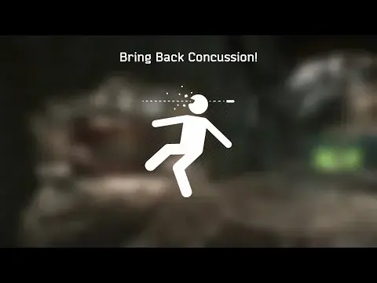

Bring Back Concussion
- Downloads
- 6,265
- Favourites
- 27
- Mod lists
- 71
This mod aims to bring a few features with a bit of sprinkles on top EFT has lost over time, including:
- Death from headshot sound effect
- Death sound effect when screen goes black with a bit of Live EFT simulation - yes, that iconic fading heartbeat sound once you die!
- Concussion and tinnitus effect upon getting head damage if the damage was blocked
- Grenades can blind you for a small duration of time (must have concussion enabled for grenades!), simulating a loss of consciousness due the fracture
- Headshots can blind you for a small duration of time, also simulating a loss of consciousness due the fracture
- Option to make grenades always concuss you when they hit you. Current BSG’s implementation concusses you only when you’re too close to the explosion
Everything is optional and can be configured in F12 BepInEx menu!
Q: The game.. Already has all of this?
A: Technically, it does. In terms of execution - it does not. Not only it no longer plays the Death UI sound, it also no longer triggers concussion upon receiving headshot (under some, or less conditions). This mod fixes BSGs original implementations and adds a few new niche along misc features. I suggest reading the above!
Here are mods that would fit just right with this mod:
Headshot Darkness - Makes your screen instantly black if you die from a headshot
Headshot Damage Redirection - Just so you can tank a couple more of these sweet sweet helmet hits :kek:
General Overview

Grenade blindness
Blindness from headshot
Drag and drop 7z contents in your root directory of SPT game.
Note: Some of the code was inherited from previous mod known as Get Concussed for SPT 3.10.5 by no longer active penguingreentea
Version
1.0.3
- Fixed an edge case where tinnitus effect is enabled along blindness effects, causing blindness to never appear
Version
1.0.2
This update brings even more customization (all optional!), for some who aim to make their game harder, or poke around!
Introducing:
- Temporary blindness from headshots
- Temporary blindness from grenade explosions
- Tinnitus mitigation, if enabled (like a global switch)
- Option to use more headshot sounds, or just one!
Along that I have fixed a few bugs related to headshot proc when you hit barbed wire with your head. Thank you all!
New Previews
Headshot Blindness
Grenade Blindness
Version
1.0.1
- Now using real head hit sounds, for even more immersive head-eyes experience!
- Same goes to helmet hit sound effects if your helmet tanked a shot!
- Small adjustments to the Death UI sound delay
- Mark ups to the configuration descriptions
Version